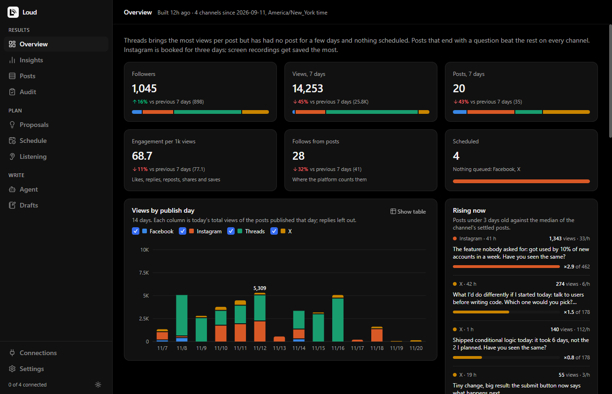
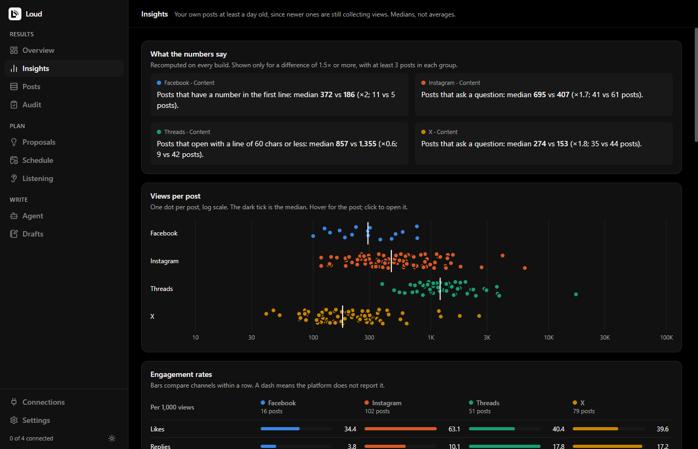
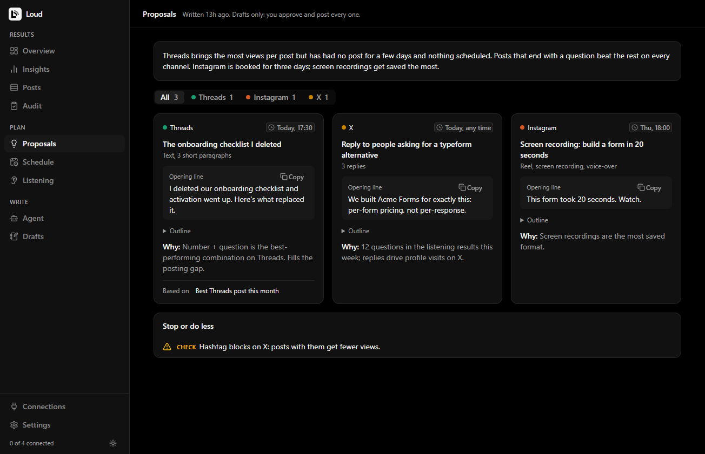
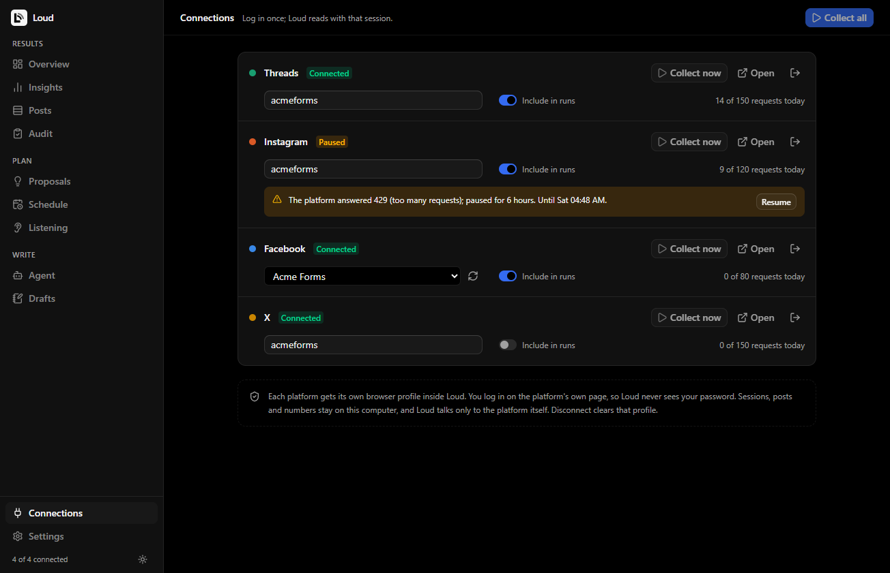

Version 0.1 · free and open source
Try something
loud.
See which of your posts actually work on Threads, Instagram, Facebook and X. Loud reads your own numbers through your own logins, on your computer, and tells you what to post next.
Windows, macOS and Linux.

Screens use Loud's built-in demo, Acme Forms. Every name and number in it is made up.
Numbers you can act on
Your posts, measured fairly
A post keeps collecting views for a day, so Loud compares only posts at least a day old. It uses medians, so one viral post does not hide the rest, and engagement per 1,000 views, so a quiet week is not a bad week.
- Patterns such as "posts that ask a question" are shown only with 3 or more posts on each side.
- Timing in 3-hour blocks, and how often you post on each channel.

What to post next
Proposals come from what already worked for you and from what people ask about your topics. Write drafts with the right character count for each platform, then post them yourself.
- An optional agent, through Claude Code or Codex signed in on your computer, can analyse and draft. It is off until you turn it on, and it cannot post.
- Listening shows other people's posts on your keywords, for reference.

Your accounts come first
You log in on each platform's own page, inside Loud. Loud never sees a password. It reads what those pages already show you, slowly: requests are spaced out and capped each day, and Loud stops at any login check or captcha until you deal with it yourself.
- Loud reads. It does not post, like or follow.
- Collect one platform at a time, or all of them, when you choose.

On your computer
Sessions, posts and numbers stay on your machine. Loud talks only to the platforms you connect.
No account with us
There is no Loud server and nothing to sign up for. Update checks are off until you turn them on.
Open source
MIT licensed. Read every line on GitHub.
Try something loud.
Early version. The installers are not code-signed yet, so Windows asks you to confirm the first time. macOS and Linux builds have not been tried by us yet.